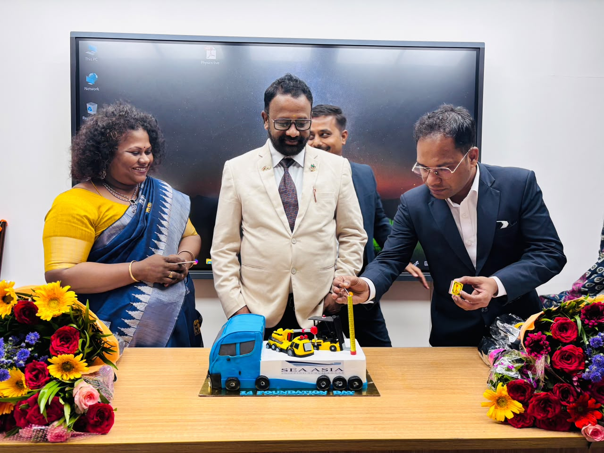
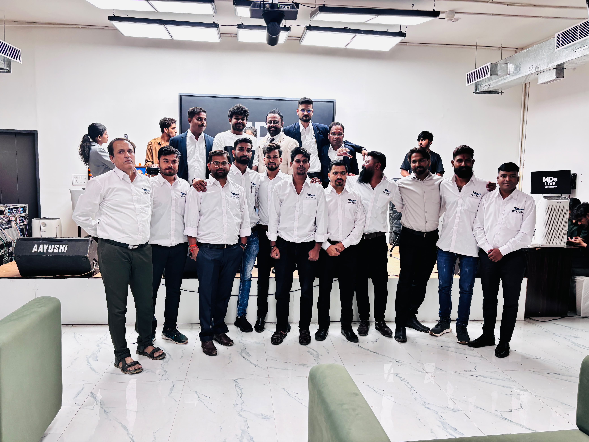
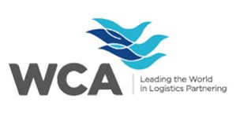
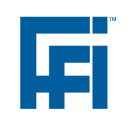
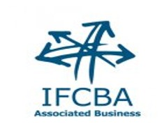
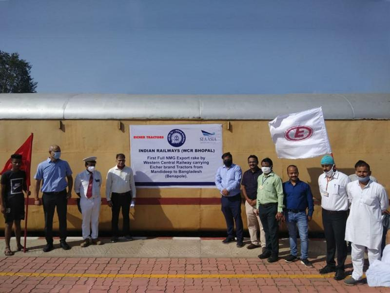

ABOUT SEA ASIA
Customs roots.
Global reach.
Since 2013, Sea Asia has helped businesses coordinate customs clearance, freight, and cargo movement from Madhya Pradesh to global markets.
LEADERSHIP & VISION
Building a dependable partner for the region.
A NOTE FROM OUR FOUNDER
A message from our Director
To me, progress has never been a distant dream; it is a reality we move closer to with every milestone.
Each achievement brings another goal to pursue. Guided by this belief, I founded Sea Asia Shipping Services LLP in 2013.
Sea Asia began as a Custom House Agent and has grown into a recognized name in its business segment. I have always wanted us to go beyond global reach and make a difference through high-quality services at competitive prices.
Expanding into highly sensitive areas, where compliance and statutory knowledge are essential, brought challenge after challenge. With the support of my dedicated team, we overcame them and reached new milestones of recognition.
Our journey continues. With the support of our team and customers, I am confident Sea Asia will keep raising its standards of excellence for years to come.
MY COMMITMENTTo provide timely, cost-effective services consistently, while ensuring high customer satisfaction.
OUR FOUNDER & MANAGING DIRECTORSanjeev K. Mudaliar

OUR TEAM
Knowledgeable people. Connected support.
More than 75 skilled professionals bring experience across customs clearance, freight forwarding, documentation, and cargo coordination.
With branch offices at key cities and inland container depots, and global tie-ups, our teams connect local requirements with wider logistics networks.
Talk to our team


1 / 8
A COMPANY MOMENT
Celebrating the people behind our journey.
Our Foundation Day brings colleagues together to recognize the people, partnerships, and shared work that have shaped Sea Asia.
See more company momentsINDUSTRIES WE SUPPORT
Different cargo. Thoughtful coordination.
We support customs, documentation, and logistics coordination based on cargo type, destination, applicable regulations, and the agreed service scope.
Manufacturing & Engineering
Machinery, industrial equipment, components, and engineering products.
Agriculture & Agro-Based Industries
Eligible agricultural commodities and related products, subject to applicable requirements.
Pharmaceuticals & Healthcare
Eligible consignments, with coordination subject to required approvals.
Chemicals & Industrial Materials
Shipment documentation and coordination, subject to handling and regulatory requirements.
Consumer Goods & Merchandise
Import-export documentation and shipment coordination for commercial products.
Export-Oriented Businesses
Documentation, customs coordination, and shipment planning for exporters.
HOW WE WORK
One coordinated view of every shipment.
Our approach emphasizes accountability, timely follow-up, and clear communication among the parties involved.
Shipment planning
Understand requirements and coordinate activities with clients, carriers, transporters, and other stakeholders.
Documentation management
Review available documents, identify missing information, and coordinate corrections where needed.
Customs process coordination
Coordinate applicable clearance procedures, examinations, and cargo release formalities.
Shipping line coordination
Follow up on bookings, shipping instructions, schedules, documents, and shipment milestones.
Cargo movement
Coordinate container placement, cargo movement, terminal entry, and onward transport when in scope.
Shipment status updates
Share relevant updates, pending requirements, and operational developments.
PORTS & LOCATIONS
Coordination at the locations your shipment needs.
Depending on the shipment and agreed scope, we coordinate with relevant ports, terminals, CFSs, ICDs, shipping lines, transporters, and logistics partners.
Coverage is confirmed for each enquiry. Contact us with your origin, destination, and cargo details so we can advise on the locations and services available.
Ask about coverageOUR PRESENCE
Closer to cargo.
Across India.
Local teams supporting your shipping and logistics needs across India.

OUR COMMITMENT
Dependable service, built on trust.
We aim to make shipping and customs-related processes more organized and manageable for our clients.
Reliability
Dependable coordination and systematic follow-up.
Documentation accuracy
Careful review and timely identification of discrepancies.
Transparent communication
Updates on progress, pending requirements, and relevant developments.
Timely coordination
Attention to shipment milestones, cut-off dates, and prompt follow-up.
Customer-focused service
Understanding operational needs and working within the agreed scope.
Professional relationships
Long-term partnerships grounded in integrity and responsiveness.
INDUSTRY NETWORKS
Connected through trusted associations.
Sea Asia’s memberships and affiliations connect our work with international freight, customs, and export communities.

WCAworld
FIATA
IFCBA FIEO
FIEOCOMPANY IN ACTION
Complex moves, carefully coordinated.
Each shipment brings its own requirements. These projects show the range of coordination our teams provide.

RAIL EXPORT / INDIA TO BANGLADESH
Eicher tractors by rail
Sea Asia coordinated its first freight-train export from Mandideep to Benapole, Bangladesh.

SPECIALIZED CARGO / MADHYA PRADESH
Project Cheetah operation
Customs, airport, and ground logistics coordination supported the cheetah translocation from Africa to Madhya Pradesh.
QUICK ANSWERS
Frequently asked questions.
What services does Sea Asia provide?
Shipping services, customs clearance coordination, EXIM documentation support, and logistics coordination, based on your requirements and our agreed scope.
Do you assist with import and export shipments?
We support import and export documentation and related customs and shipping coordination, subject to the services required and our operational coverage.
What documents are generally required for customs clearance?
Common documents include a commercial invoice, packing list, Bill of Lading or Air Waybill, Shipping Bill or Bill of Entry, and any applicable licences or certificates. Requirements vary by cargo, country, and regulation.
How can I request a quotation?
Send us your cargo type, origin, destination, transport mode, and required services through the enquiry form. Our team can review the details and advise on the quotation process.
How long does customs clearance take?
Timing depends on cargo, complete documentation, customs assessment, examinations, approvals, and other operational factors.
Will I receive shipment status updates?
We coordinate relevant updates on documentation, clearance progress, shipping milestones, and cargo release within the services engaged.
Can you assist with special regulatory documentation?
We can coordinate applicable documentation where it falls within our scope. Additional approvals, inspections, or certificates may be required depending on the product and authorities.
How do I get started?
Contact our team with your import-export requirements. We will review the information and advise on relevant documentation, coordination requirements, and next steps.
GET TO KNOW SEA ASIA
Company profile
Discover our story since 2013, our mission and vision, service portfolio, industries and locations served, operational capabilities, and business contact details. Our profile helps importers, exporters, manufacturers, and prospective partners learn about Sea Asia and explore working with us.
START A CONVERSATION
Tell us what you’re moving.
Share your shipment details and our team can discuss the services that fit your requirements.